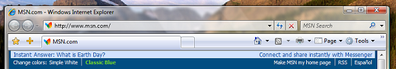
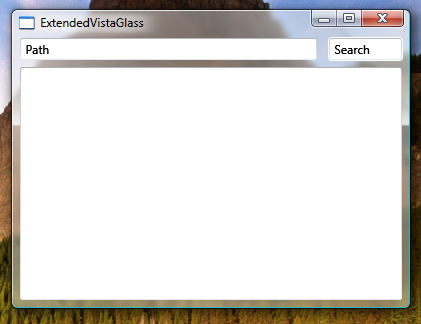

Использование стеклянной рамки в приложении WPF
В этом разделе показано, как расширить Windows Vista стеклянную рамку на клиентскую область приложения Windows Presentation Foundation (WPF).
Note
Этот пример будет работать только на компьютере под управлением Windows Vista, где работает диспетчер окон рабочего стола (DWM) с включенным эффектом прозрачного стекла. Windows Vista Home Basic edition не поддерживает эффект прозрачного стекла. Области, которые обычно отображаются с эффектом прозрачного стекла, в других выпусках Windows Vista отображаются непрозрачными.
Пример
На следующем рисунке показан Стеклянная рамка, расширенная в адресной строке Internet Explorer 7:

Чтобы расширить стеклянную рамку в приложении WPF, требуется доступ к неуправляемому API. В следующем примере кода выполняется платформенный вызов (pinvoke) для двух API, необходимых для расширения рамки на клиентскую область. Каждый из этих API объявляется в классе с именем NonClientRegionAPI.
[StructLayout(LayoutKind.Sequential)]
public struct MARGINS
{
public int cxLeftWidth; // width of left border that retains its size
public int cxRightWidth; // width of right border that retains its size
public int cyTopHeight; // height of top border that retains its size
public int cyBottomHeight; // height of bottom border that retains its size
};
[DllImport("DwmApi.dll")]
public static extern int DwmExtendFrameIntoClientArea(
IntPtr hwnd,
ref MARGINS pMarInset);
<StructLayout(LayoutKind.Sequential)>
Public Structure MARGINS
Public cxLeftWidth As Integer ' width of left border that retains its size
Public cxRightWidth As Integer ' width of right border that retains its size
Public cyTopHeight As Integer ' height of top border that retains its size
Public cyBottomHeight As Integer ' height of bottom border that retains its size
End Structure
<DllImport("DwmApi.dll")>
Public Shared Function DwmExtendFrameIntoClientArea(ByVal hwnd As IntPtr, ByRef pMarInset As MARGINS) As Integer
End Function
DwmExtendFrameIntoClientArea — функция DWM, которая расширяет рамку на клиентскую область. Она принимает два параметра — дескриптор окна и структуру MARGINS. MARGINS используется для сообщения DWM, насколько следует расширить рамку в клиентской области.
Пример
Для использования функции DwmExtendFrameIntoClientArea необходимо получить дескриптор окна. В WPF, дескриптор окна может быть получен из Handle свойство HwndSource. В следующем примере рамка расширяется на клиентскую область на Loaded событий окна.
void OnLoaded(object sender, RoutedEventArgs e)
{
try
{
// Obtain the window handle for WPF application
IntPtr mainWindowPtr = new WindowInteropHelper(this).Handle;
HwndSource mainWindowSrc = HwndSource.FromHwnd(mainWindowPtr);
mainWindowSrc.CompositionTarget.BackgroundColor = Color.FromArgb(0, 0, 0, 0);
// Get System Dpi
System.Drawing.Graphics desktop = System.Drawing.Graphics.FromHwnd(mainWindowPtr);
float DesktopDpiX = desktop.DpiX;
float DesktopDpiY = desktop.DpiY;
// Set Margins
NonClientRegionAPI.MARGINS margins = new NonClientRegionAPI.MARGINS();
// Extend glass frame into client area
// Note that the default desktop Dpi is 96dpi. The margins are
// adjusted for the system Dpi.
margins.cxLeftWidth = Convert.ToInt32(5 * (DesktopDpiX / 96));
margins.cxRightWidth = Convert.ToInt32(5 * (DesktopDpiX / 96));
margins.cyTopHeight = Convert.ToInt32(((int)topBar.ActualHeight + 5) * (DesktopDpiX / 96));
margins.cyBottomHeight = Convert.ToInt32(5 * (DesktopDpiX / 96));
int hr = NonClientRegionAPI.DwmExtendFrameIntoClientArea(mainWindowSrc.Handle, ref margins);
//
if (hr < 0)
{
//DwmExtendFrameIntoClientArea Failed
}
}
// If not Vista, paint background white.
catch (DllNotFoundException)
{
Application.Current.MainWindow.Background = Brushes.White;
}
}
Пример
В следующем примере показано простое окно, в котором рамка расширяется на клиентскую область. Рамка расширяется за пределы верхней границы, содержащей два TextBox объектов.
<Window x:Class="SDKSample.Window1"
xmlns="http://schemas.microsoft.com/winfx/2006/xaml/presentation"
xmlns:x="http://schemas.microsoft.com/winfx/2006/xaml"
Title="Extended Glass in WPF" Height="300" Width="400"
Loaded="OnLoaded" Background="Transparent"
>
<Grid ShowGridLines="True">
<DockPanel Name="mainDock">
<!-- The border is used to compute the rendered height with margins.
topBar contents will be displayed on the extended glass frame.-->
<Border Name="topBar" DockPanel.Dock="Top" >
<Grid Name="grid">
<Grid.ColumnDefinitions>
<ColumnDefinition MinWidth="100" Width="*"/>
<ColumnDefinition Width="Auto"/>
</Grid.ColumnDefinitions>
<TextBox Grid.Column="0" MinWidth="100" Margin="0,0,10,5">Path</TextBox>
<TextBox Grid.Column="1" MinWidth="75" Margin="0,0,0,5">Search</TextBox>
</Grid>
</Border>
<Grid DockPanel.Dock="Top" >
<Grid.ColumnDefinitions>
<ColumnDefinition/>
</Grid.ColumnDefinitions>
<TextBox Grid.Column="0" AcceptsReturn="True"/>
</Grid>
</DockPanel>
</Grid>
</Window>
На следующем рисунке показан Стеклянная рамка, расширенная в WPF приложения:
